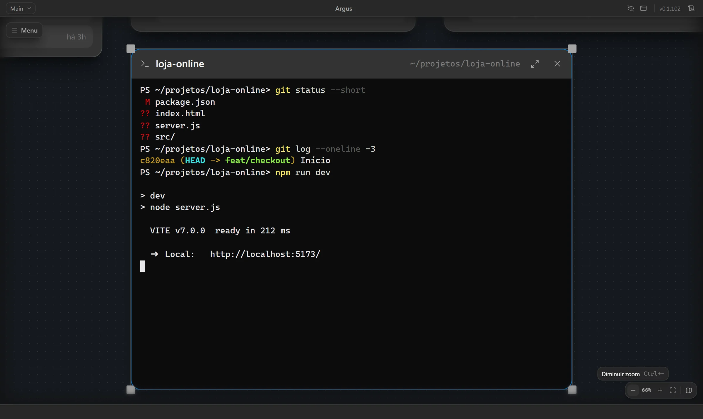

Shell ou Claude Code
Escolha no botão direito da pasta. O terminal abre no lugar certo, com a conta do grupo.
{ }Terminais
Abra o shell ou o Claude Code em qualquer pasta, ao lado dos projetos. Rode git, testes e o servidor do projeto sem trocar de janela.
Vídeo do Argus com projetos e conversas de exemplo.
O terminal no mesmo lugar que o resto
Escolha no botão direito da pasta. O terminal abre no lugar certo, com a conta do grupo.
Abra um terminal que continua uma conversa com claude --resume.
Um botão acima da pasta roda o script dev ou start e mostra a porta.
Amplie o terminal para a tela toda quando precisar de espaço.
Ctrl+ e Ctrl- mudam o tamanho da fonte de cada terminal.
A lista mostra o que os agentes deixaram no ar, com atalho para abrir ou encerrar.
No canvas
Arraste o terminal para perto da pasta, redimensione e deixe rodando. Ele acompanha o zoom do canvas como qualquer outro bloco.

Comece agora
Sem chave de API e sem servidor no meio. Baixe, abra suas pastas e comece.
macOS, Windows ou Linux, direto dos releases no GitHub.
O Argus usa o claude da sua máquina e a assinatura que você já tem.
Arraste para o canvas ou rode argus . no terminal.
Veja também
Construindo o jeito aberto de acompanhar agentes de código.
O Argus é a base para trabalhar com vários agentes ao mesmo tempo, com tudo à vista e na sua máquina.
Baixar o Argus